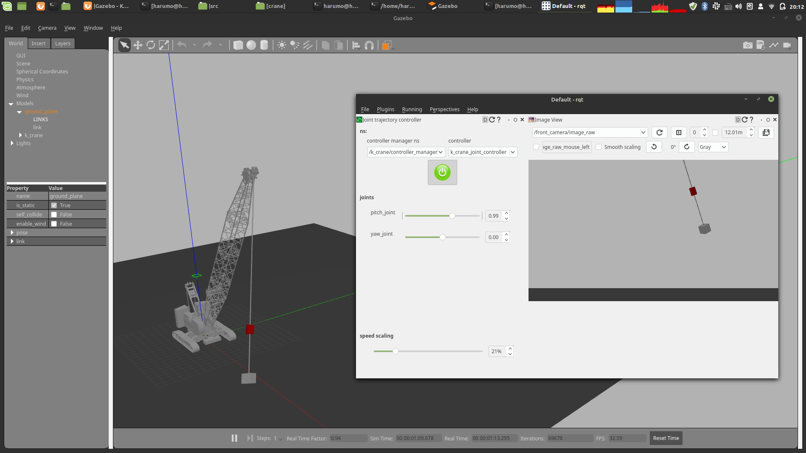

Gazebo
物理シミュレーションであるgazeboの使用方法について説明します．
このシミュレータ中のクレーンには慣性センサとカメラが設置されています．これらはプログラム中から使用することができます．
k_crane_controleと本パッケージを組み合わせて使用することでクレーンを制御することができます．
クレーンはプログラムの中から時々刻々制御することも，事前に軌道を生成しておいて，それを実行することもできます．
Note
現在，このシミュレータは開始時に任意の姿勢を取ることができない問題があります． 単純に開発者がやり方がわかっていないだけなのですが．．．でも代替案を用意してあるので 安心してください．
チュートリアル
シミュレータの立ち上げ方
- 何もセンサを設置していない素のシミュレータ
roslaunch k_crane_gazebo k_crane_gazebo.launch
- カメラや吊り荷，センサを搭載したシミュレータ
roslaunch k_crane_gazebo k_crane_with_payload.launch
カメラなどのセンサを追加する場合はk_crane_description/robots/k_crane_with_payload.urdf.xacro
を参考にしてください．
初期状態への以降
rosrun k_crane_control intial_state
クレーンを指定した初期状態（旋回角，起伏角）に移動させるプログラム． ２つの角度はプログラム内に直書きしてしまっているので，変更するたびにコンパイルが必要です．
揺れの停止
ロープの揺れを強制的に止めるプログラム群
- joint12 (may nonsense)
rosrun k_crane_control initial_joint12
- joint23 (may nonsense)
rosrun k_crane_control initial_joint23
- joint 4 (may nonsense)
rosrun k_crane_control initial_joint4
手動でクレーンを動かす

gazeboを立ち上げた状態で，コントロールボードを立ち上げるためにrqtを起動します．
rqt
プラグインを設定します．
Plugins -> Robot Tools -> joint trajectory controller
controller manager nsを/k_crane/controller_manager, controllerをk_crane_controllerに設定します．
設定後，中央の電源ボタンアイコンを押し，緑になったら，スライドバーを左右に移動させるとクレーンも移動します．
カメラ画像を取得する

手動でクレーンを動かすを行った後に，rqtのPluginsからVisulalization-> Image Viewを選択し/front_camera/image_rawトピックを選択することにより，クレーンに設置されたカメラからの画像を取得することができる．このカメラの設定はxacroファイルを変更することで行なえる．
実験的に揺れを起こす
- 初期状態に移動する
rosrun k_crane_control intial_state
- ロープを６度だけ傾ける
rosrun k_crane_control initial_joint_boom_pi
- 佐野先生の制振軌道を送る（軌道は適当らしく，うまく行かない）
rosrun k_crane_control sano_joint_trajectory_action
- gazebo下部の再生ボタンを押すと，シミュレータが開始され，制振軌道が送られる
ツール
- gazeboをプログラム内から一時停止する
rosrun k_crane_control pause_gazebo
- 停止中のgazeboをプログラム内から再開させる
rosrun k_crane_control pause_gazebo
- 速度軌道を位置軌道へ変換する
rosrun k_crane_control integral速度コマンドを位置コマンドへ積分するプログラム 積分するcsvファイルの指定はプログラム内で行っています． 初期位置もプログラム内で指定する必要あり． サンプリング周期はプログラム内で指定しており，現在は１００Hzです．
Tips
-
base.urdf.xacro
inertiaタグの中の要素に負の値を含めることはできない．全て正の値である必要がある． そうしないと，ロボットが地面と衝突せず，沈んでいく．また，クレーンは質量が大きく 通常の場合は慣性テンソルの対角成分以外は０になるが，０にすると挙動がおかしくなる． そのため100に設定した．